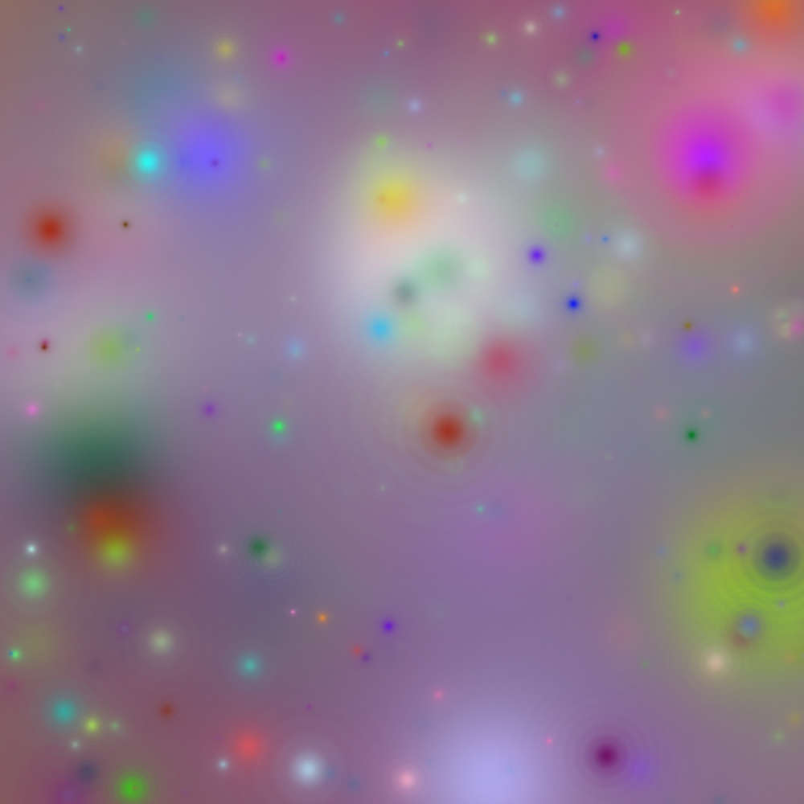

Run of com.github.skac112.klee.painters.Painter1 painter
Time: 22-11-17_09:39:50Git hash: 7b78ffb
Painter parameters
- aBase: 10.0
- numElems: 300
- randSeed: 2
- colorDisperse: 0.8
- aSpan: 40.0
Render parameters
- X range: <0.0; 1.0>
- Y range: <0.0; 1.0>
- nx: 1000, ny: 1000
